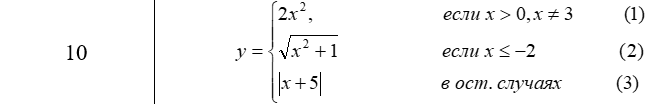

<!DOCTYPE html>
<html lang="en">
<head>
    <meta charset="UTF-8">
    <meta name="viewport" content="width=device-width, initial-scale=1.0">
    <meta http-equiv="X-UA-Compatible" content="ie=edge">
    <title>Стас Коркуц</title>
    <script>
    var x = prompt('Введите x');
    var y
    if(x>0 && x!=3)
        y=2*x*x;
    else if(x<=-2)
        y=Math.sqrt(x*x+1);
        else
            y=Math.abs(x+5);
    document.write('В соответствии со своим вариантом необходимо написать Java-скрипт (lab1-5.html) для вычисления значения функции y. В выводимом файле предусмотреть форматирование документа, вывод текста задания на лабораторную работу, включая рисунок исходной функции, и вывод информации о разработчике скрипта.');
    document.write('<br><br>');
    document.write('<br>X = ',x,'<br>Y = ',y);
    </script>
</head>
<body>
    
</body>
</html>